Instalamos squid
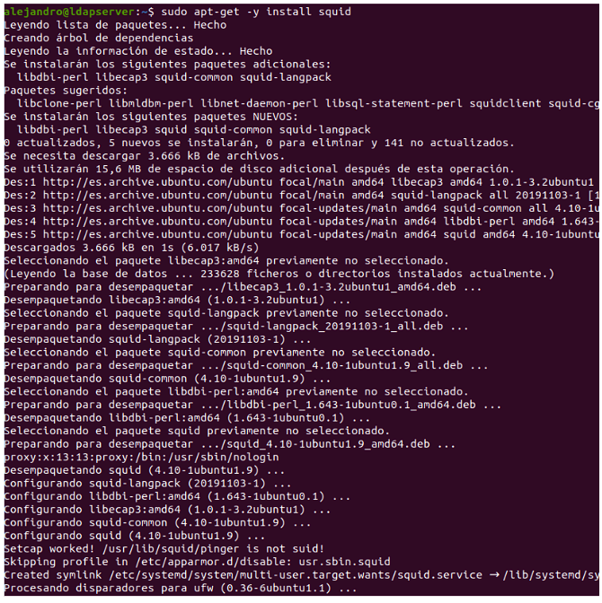Hacemos que el demonio se inicie automáticamente cada reinicio de la máquina.
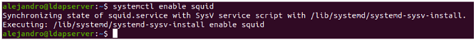MUY IMPORTANTE CADA VEZ QUE SE MODIFICA EL ARCHIVO DE CONFIGURACIÓN SE HACE UN "sudo systemctl restart squid"
En el archivo de configuración hacemos un sudo nano /etc/squid/squid.conf y añadimos estas 2 líneas
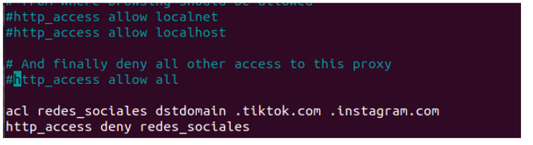ahora comprobamos nuestra ip en mi caso la 192.168.10.30
Y en la configuración de conexiones de firefox añadimos la ip con el puerto de squid por defecto
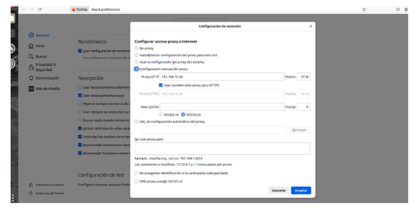Comprobamos que está funcionando bien
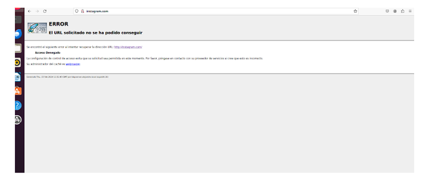Instagram funciona y tiktok vemos que también
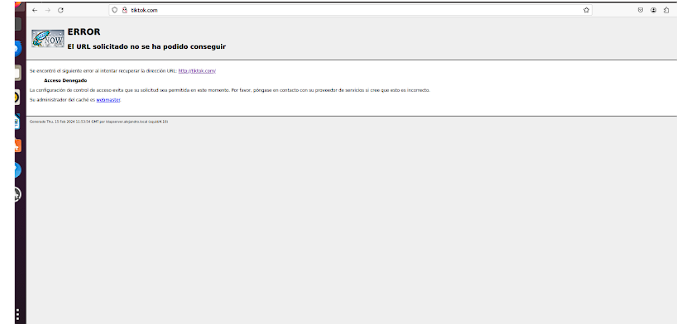Si comprobamos otra pagina como por ejemplo el aula virtual nos deja usarla perfectamente
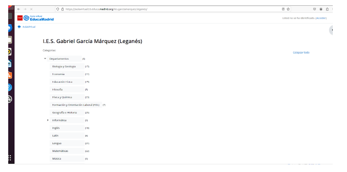Añadimos estas dos líneas más al archivo de configuración
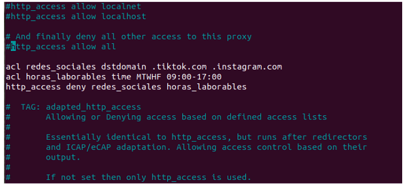comprobamos y ya que son las 11:55 no me deja entrar
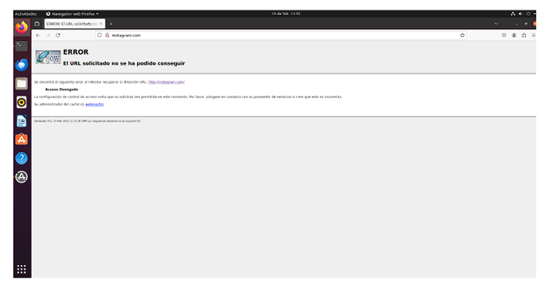Instalamos apache2-utils para poder crear el usuario
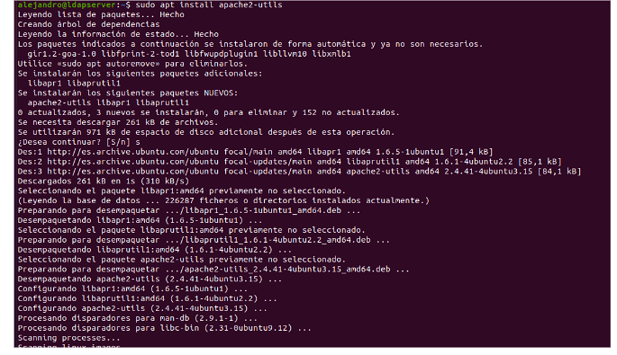Ejecutamos este comando para añadir el usuario
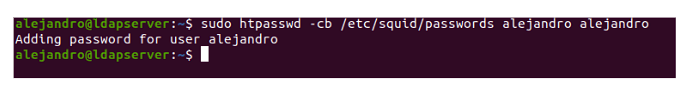Añadimos esta slíneas en el archivo de squid para que me pida autenticación al abrir firefox .
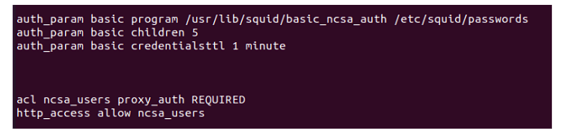Abrimos firefox y comprobamos que me pide autenticarme para poder navegar
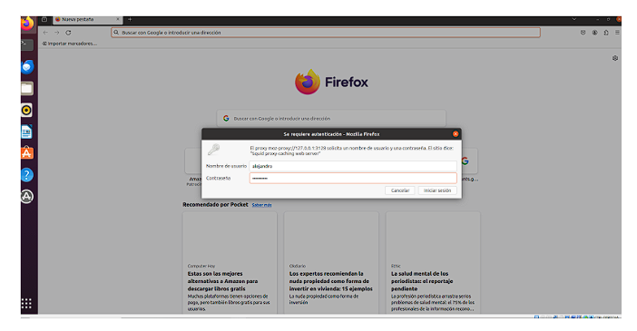Pongo las credenciales y ya podemos usar firefox
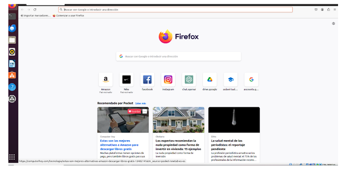Añadimos un usuario a ldap con un archivo.ldif
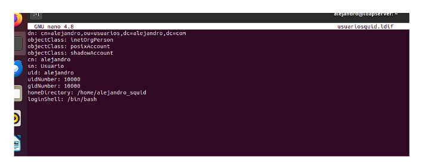Añadimos estas líneas en el archivo de configuración de squid
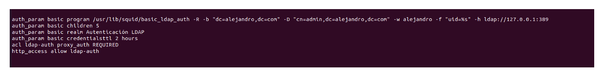Comprobamos que todo está bien
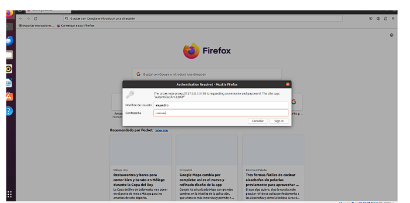Podemos comprobar que nos pide autenticación de ldap, la ponemos y ya podemos navegar
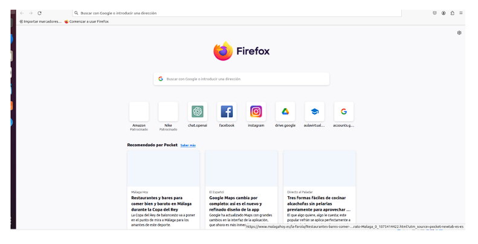